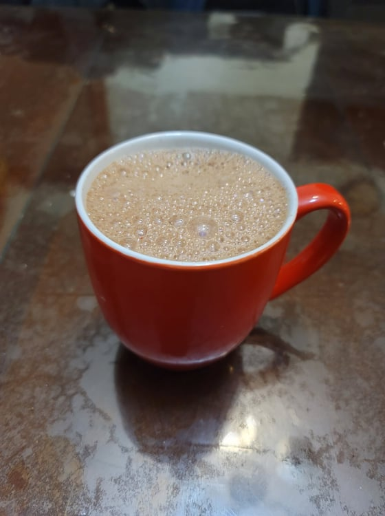

Mexican Hot Chocolate

Ingredients:
Instructions:
- 2 cups Milk
- 1/2 - 1 tablet Mexican chocolate
Optional Add-ins:
- 1/8 tsp Ground cinnamon, or to taste
- 1/8 tsp Ancho chili powder, or to taste
- 1/2 tsp Vanilla extract, or to taste
Instructions:
- In a small pot, heat the milk until right before boiling. Then reduce the heat to low.
- Whisk in the chocolate. Continue to whisk until the chocolate completely dissolves into the milk.
- Whisk in any of the optional add-ins. Let cook for 1-3 minutes, whisking occasionally, and then remove from the heat. Pour into mugs and serve hot.